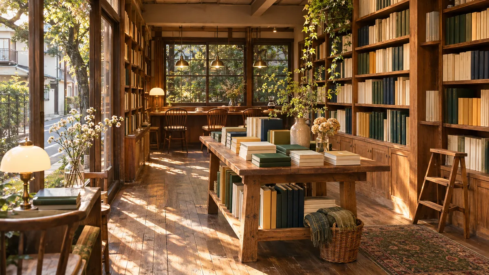

INTERACTIVE BOOKSHELF — CLICK A SPINE TO READ
エッセイ・暮らし
白石 かなえ 著 ／ 栞堂選書
日々の小さな食卓の記録から、土地の記憶と人の温もりをすくい上げる静かな随筆集。休日の朝、深煎り珈琲を淹れて少しずつページをめくりたくなる一冊です。

文芸・エッセイ・建築・暮らしの本を中心に約3,500冊が並ぶ小さな独立系書店。購入前の本を喫茶席で試し読みしていただけます。
READING CAFE（10 SEATS）